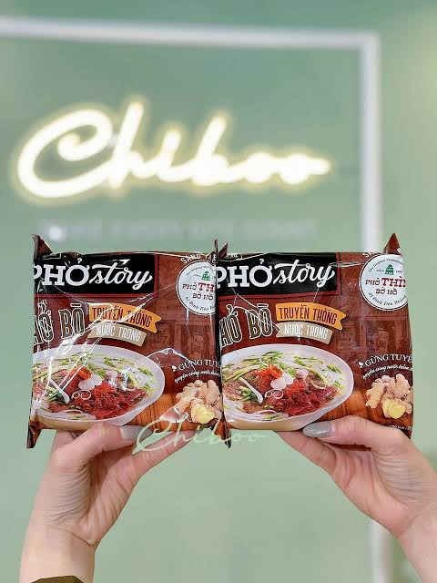
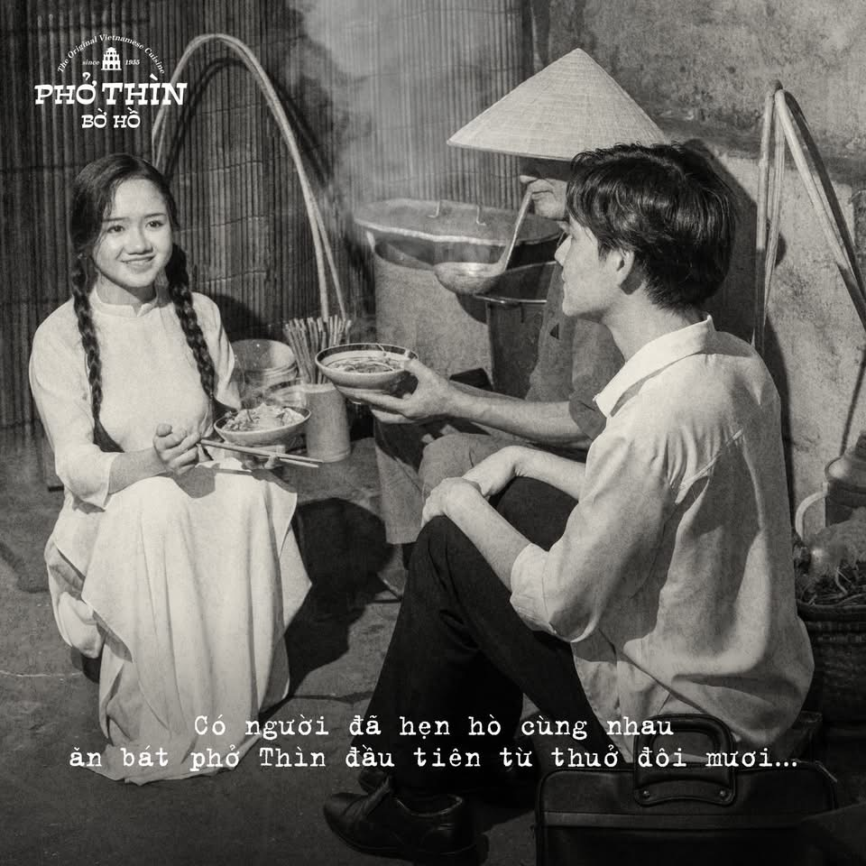

Từ gánh phở rong buổi đầu giải phóng Thủ đô của cụ Bùi Chí Thìn bên gốc đa Bờ Hồ, đến biểu tượng ẩm thực vươn tầm quốc tế tại Hội nghị Thượng đỉnh Mỹ - Triều 2019.

Phở Thìn Bờ Hồ do cụ Bùi Chí Thìn (1928 - 2001) sáng lập từ năm 1955 tại số 61 Đinh Tiên Hoàng, ngay đối diện đền Ngọc Sơn và tháp Rùa cổ kính. Khác biệt với phong cách xào lăn nhiều mỡ hành của các hàng phở mở sau này, Phở Thìn Bờ Hồ trước sau như một trung thành với nước dùng thanh trong, ngọt sâu cuống họng nấu hoàn toàn từ xương ống bò hầm liên tục 12 tiếng.
Từng thớ thịt bò tái được dằn nhẹ trên mặt thớt gỗ nghiến bằng sống dao bài bản, nhúng vào nồi nước dùng sôi sùng sục 98°C bốc khói nghi ngút. Năm 2019, Phở Thìn Bờ Hồ vinh dự đại diện tinh hoa ẩm thực Thủ đô phục vụ hơn 4.000 bát phở cho các nguyên thủ và phóng viên quốc tế tại Trung tâm Báo chí Hội nghị Thượng đỉnh Mỹ - Triều.
Những bát phở nóng hổi và món ăn kèm nức tiếng làm nên tên tuổi Phở Thìn Bờ Hồ
Hành trình lan tỏa văn hóa phở Việt ra khắp mọi miền

Đánh dấu bước tiến đưa hương vị phở thanh tao gia truyền hơn 70 năm của dòng họ Bùi đến mọi gia đình Việt Nam.

Ký ức về góc phố Đinh Tiên Hoàng, nơi tiếng gõ muôi chan phở của cụ Thìn đã trở thành thanh âm quen thuộc của người Hà Nội.